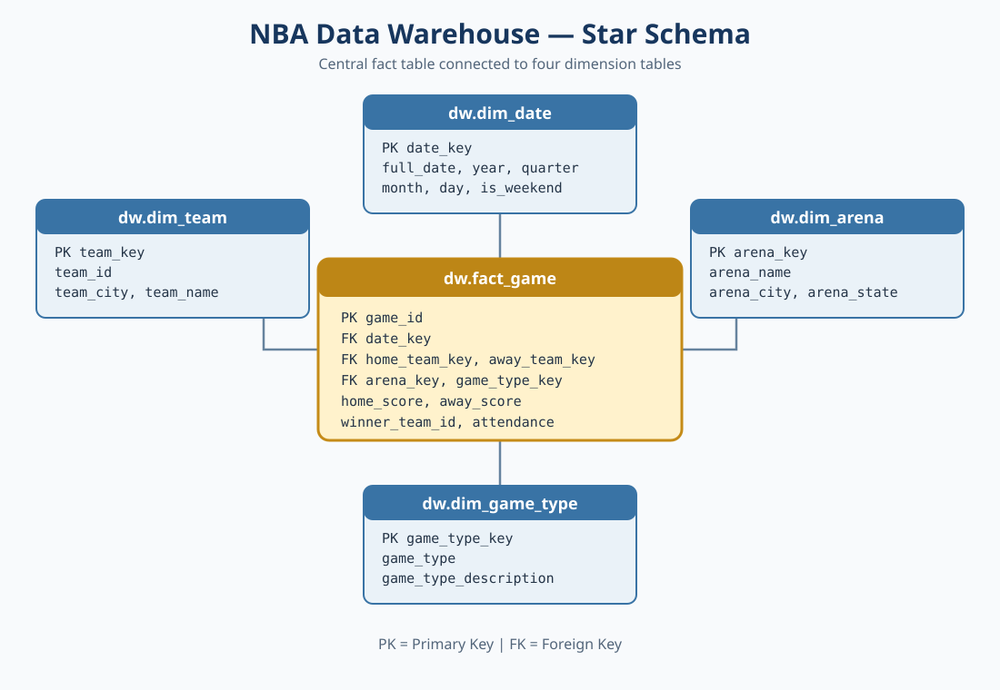
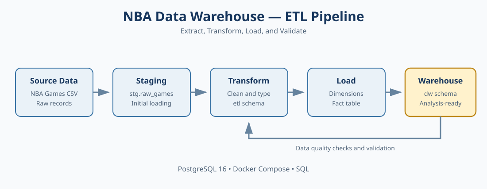

Project Summary and Data Warehouse Documentation
PostgreSQL 16 | Docker Compose | SQL | Star Schema
The NBA Data Warehouse project organizes historical NBA game records into a structured PostgreSQL database. It uses an Extract, Transform, and Load (ETL) process to prepare source data for querying and analysis.
The warehouse follows a Star Schema design, with a central game fact table connected to date, team, arena, and game type dimensions.
| Metric | Value |
|---|---|
| Total games | 73,470 |
| Teams | 71 |
| Arenas | 276 |
| Game types | 8 |
| Date dimension rows | 29,200 |
| Dataset Detail | Value |
|---|---|
| First game date | November 26, 1946 |
| Last game date | November 5, 2026 |
| Average home score | 106.06 |
| Average away score | 102.52 |
| Average attendance (available values only) | 17,851 |
dw.fact_game stores game-level records, including game ID,
date and dimension keys, scores, winner, and attendance.
| Dimension Table | Description |
|---|---|
dw.dim_date | Date attributes |
dw.dim_team | Team information |
dw.dim_arena | Arena information |
dw.dim_game_type | Game type information |
The staging schema (stg) holds source records, while the
ETL schema (etl) holds cleaned and transformed data.
The fact table is connected to four dimension tables: date, team, arena, and game type.

The ETL process follows these stages:
| Stage | Process | Database Location |
|---|---|---|
| 1. Source | NBA game records in CSV format | Source file |
| 2. Extract | Load raw records | stg.raw_games |
| 3. Transform | Profile, clean, and convert data types | etl schema |
| 4. Load | Load dimension and fact records | dw schema |
| 5. Validate | Check row counts and data quality | Validation queries |

| ETL Stage | Number of Rows |
|---|---|
stg.raw_games | 73,470 |
etl.cleaned_games | 73,470 |
etl.typed_games | 73,470 |
etl.typed_games_final | 73,470 |
dw.fact_game | 73,470 |
| Data Quality Check | Result |
|---|---|
| Total fact rows | 73,470 |
| Unique game IDs | 73,470 |
| Duplicate game IDs | 0 |
| Missing checked critical fields | 0 |
| Invalid negative scores | 0 |
| Missing attendance values | 71,887 |
The project transforms historical NBA game records into a structured PostgreSQL data warehouse. The Star Schema supports organized data queries, while the ETL process prepares records for analysis. Validation checks found no duplicate game IDs or negative scores among the checks reported in this document.
| Document | File |
|---|---|
| Lab 1 Documentation | LAB_1_DOCUMENTATION.md |
| Lab 2 Documentation | LAB_2_DOCUMENTATION.md |
| Project README | README.md |